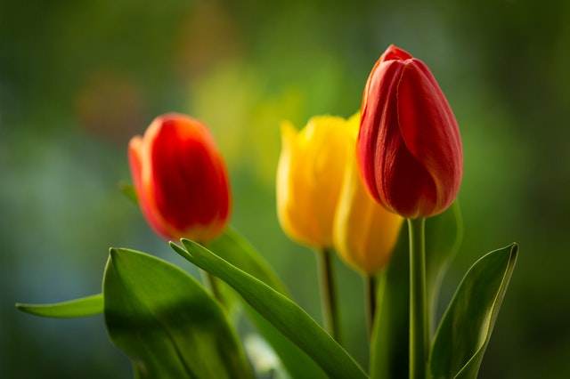
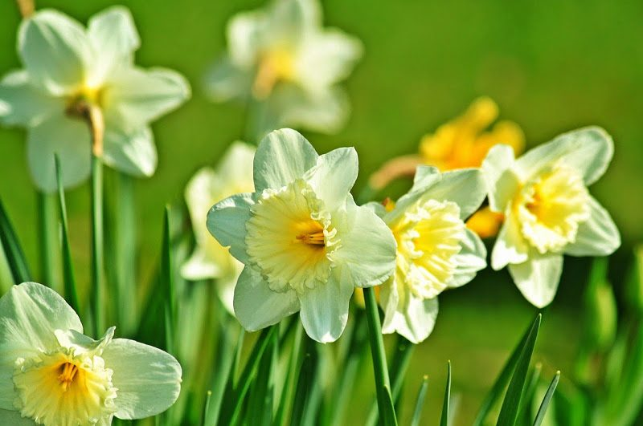

A continución presentaremos una lista con los tipos de flores que se encuentran disponibles en nuestras sucursales:
- Rosas
La rosa es una de las flores más bellas y sensuales. Su elegancia y las formas curvas o quebradas de sus pétalos la han convertido en uno de los regalos más populares para expresar nuestro sentimiento a otra persona.
La rosa roja, por ejemplo, simboliza amor y pasión; la amarilla, amistad y alegría; la blanca, paz y pureza; la rosada, gratitud y cariño. Libro: El Libro de Las Flores Por Hans Walter Lack

- Tulipanes
- 
El tulipán es un símbolo de amor sincero . Es una flor increíblemente romántica que al regalarla expresas enamoramiento, pasión, amor incondicional, amor puro, etc.
- Lirios
En este caso los lirios amarillos estan vinculados a la alegría, la felicidad. Regalar un ramo de lirios amarillos es también una buena opción si quieres expresar lealtad.

- Claveles
Blanco: “Te ofrezco una amistad poderosa y sincera, porque tú eres quien me inspira sentimientos puros.”
Rojo: “Provocas en mí una gran pasión. Te amo y así lo haré siempre.”
- Dalias
El significado de la Dalia en el lenguaje de las flores de la época victoriana ha sobrevivido, por lo que cuando la entregas como regalo, esta flor expresa compromiso, cariño, dignidad y elegancia.
- Narcisos
- 
El narciso es una flor que tiene un significado bastante generalizado. Simboliza el renacimiento, los nuevos comienzos y la vida eterna. Pero a la vez simboliza el amor no correspondido, el tipo de amor mas solitario.
- Flor de Loto
Esta es una flor que a pesar de que no suele regalarse con mucha frecuencia, es una de las flores mas hermosas del mundo con lo que se puede transmitir un hermoso mensaje ya que simboliza la pureza del cuerpo y del alma. La flor de loto también es conocida como loto sagrado o rosa del Nilo, se pueden encontrar de diversos colores, cada uno con un significado especial.
La flor de loto azul significa sabiduría y conocimiento, la blanca está relacionada con la pureza de la naturaleza, mientras que la flor de loto rosa tiene un significado espiritual.